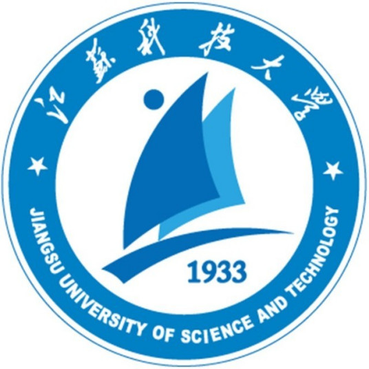

博士研究生,中共党员 |
我目前在东南大学电气工程学院攻读博士学位，师从胡秦然教授。 本人已于2021年6月从山东大学 电气工程学院获得硕士学位。 在此之前, 我于2019年6月在 江苏科技大学 电子信息学院 电气工程及其自动化专业获得了学士学位, 专业排名:(1/156)。
我的研究兴趣主要包括: 分布式能源聚合控制, 机器学习, 输电线路载流量预测。
博士 东南大学((双一流A类高校、985、211)) (2022.9 ~ 至今)
|
硕士 山东大学((双一流A类高校、985、211)) (2018.9 ~ 2021.6)
|
|  | 本科 江苏科技大学 (2014.9 ~ 2018.6)
|
Joint Probability Density Prediction for Multiperiod Thermal Ratings of Overhead Conductors. IEEE transactions
on Power Delivery
Xu Jin, Mengxia Wang, Mingjian Cui, Hua Sun, Ming Yang
Prediction of Intra-Period Minimum Thermal Rating of Overhead Conductors. IEEE transactions
on Power Delivery
Ping Zhong, AiKun Xu, Shigeng Zhang, Yiming Zhang and Yingwen Chen
地区天气实况数据用于架空导线动态增容的方法
Ping Zhong, AiKun Xu, Yilin Kang, Shigeng Zhang and Yiming Zhang
Peer-to-Peer Networking and Applications (P2PNA), 2022. Accepted, [JCR Q2][PDF]
The thermal inertia time constants and its influencing factors in the thermal dynamic process of overhead line and
cable
Ping Zhong, AiKun Xu, Yuanming Chen, Feng Gao and Guihua Duan
2019 15th International Conference on Mobile Ad-Hoc and Sensor Networks (MSN-19). [CCF C][PDF]
THAN: Multi-Modal Transportation Recommendation with Heterogeneous Graph Attention Networks
AiKun Xu, Ping Zhong, Yilin Kang, Jiongqiang Duan, Mingming Lu and Chuan Shi
IEEE Transactions on Intelligent Transportation Systems (T-ITS), 2022. Accepted, [JCR Q1]
GTTE: A GPS Trajectory based Travel Time Estimation Method Through Spatio-Temporal GNN
Ping Zhong, Anning, Wang, AiKun Xu, Mingming Lu, Senzhang Wang and Yingwen Chen
Under Review,
金旭, 奎晓燕, 张艺雯
国家发明专利, 公开号:CN109872070A
支撑新型电力系统的负荷调控技术
负责人; 经费:100万元
国网总部科技项目
数据驱动的能源互联网运行规律分析及智能调控技术研究
负责人; 经费:100万元
国网山东省电力公司科技项目
面向多级耦合断面送出的大规模新能源细化建模及优化调控技术
参与人; 经费:80万元
国网冀北电力公司科技项目
![[成绩单]](pdf/transcript_scuec.jpg){kind=link}